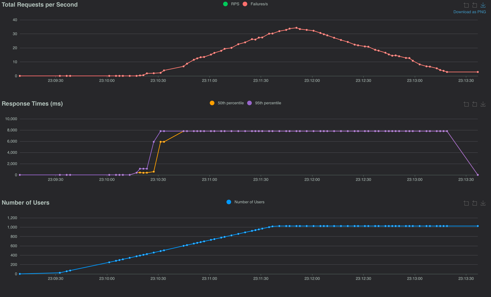

I find the data exploration ecosystem to be extremely useful and interesting. And it’s bubbling up with new tools all the time.: eg: Jupyter Notebooks, Streamlit, Voila and all the rest.
Here’s a use case for one perhaps less well know :Quarto : it’s got that great mix of markdown text plus code in a Jupyter Notebook with nice output options. We can use it to output our Notebook results into a professional report document.
Quarto and Locust and performance testing
Recently I had to perform some performance testing on a web application under simulated (but realistic) loads, so I used Locust to automatically generate realistic load profiles of a cohort of users.
Writing and running Locust tests is easy (and quite fun) but the tricky thing was automating the running of the tests and generating a report: it was tiresome to manually run each test and compile the results - but what I wanted was to kick off the performance test and the collation of the data all from a single command. Each performance test took at least ten minutes. Annoying to have to baby-sit, waiting for the run to finish to start the next one.
Here’s how I went about it. It’s not that technically challenging really – just wiring up os.system calls from the notebook. But this way makes the running multiple test runs and generation of a report all self-contained and repeatable.
There’s quite a lot of subtle details in getting load tests right. You have to be careful that you’re testing what you think you’re testing! More on that another time perhaps, but let’s keep it simple: imagine you want to single test of a system under test with the following load: a cohort of simulated users randomly clicking a link every few seconds. The number of these users increases linearly rapidly, then plateaus, then decreases back to zero.
Locust makes this type of test extremely convenient and can simulate thousands of simultaneous users nicely, as it defines the user behaviour in a Python class. This can be executed from the command line and generate wonderfully detailed reports. Use it in non-headless mode to run from the browser and to debug the tests are working as expected.
# locustfile.py
from locust import HttpUser, task, between
import random
class WebsiteUser(HttpUser):
wait_time = between(1, 5) # Wait between 1 and 5 seconds
@task
def click_link(self):
links = ["/link1", "/link2", "/link3", "/link4"]
link = random.choice(links)
self.client.get(link)
A test with a cohort of users made up of our WebsiteUser can be executed from the browser and is extremely convenient for a manual test. We can make this behaviour much more complex and we can
have a variety of user classes each modelling different behaviours. For my situation, I had the user class read the OpenAPI API specifications and extract all the viable endpoints, and then
going on a click-frenzy.
We could run tests manually from the browser and download a spreadsheet of the results (or take screenshots). But I wanted to automate this process entirely – and have the results in a nice report.

But now lets make the test more sophisticated and repeatable? We can configure the locust test from a locust.conf file. eg:
headless = true
host = https://example.com
users = 100
spawn-rate = 10
run-time = 10m
csv = data/blog_data.csv
So now we have Locust set up to run from the command line with a configuration file instead of passing in arguments.
Run locust from the command line
locust -f locustfile.py
Now we don’t need to pass in args such as: --headless --csv=my_results. And Locust will now automatically save results to a CSV file. This is going to be a bit
more standardized and more repeatable
when we
kick-off many performance tests.
locust -f my_locust_file.py
Ok so now Locust is easy to run and generates a CSV file of the results, let’s get Quarto to generate a report from the CSV file as a table:
Quarto and Pandas
By writing conclusions and analysis in a Quarto document, we can initiate and display results of the performance test in a nice report.
In an early cell, we can run the Locust bash command to generate the CSV file. We can add a comment to the cell to hide the output.
In a subsequent cell we can read the CSV file into a Pandas DataFrame and display the results - also with the comments to hide the code.
import os
os.system('locust -f locustfile.py')
That generates the performance test results into a CSV file.
Discussion of the results. (in markdown)
import pandas as pd
df = pd.read_csv('data/blog_data.csv_stats_history.csv')
# some analysis and then show the dataframe as a table
df.describe()
Conclusions and charts based on the dataframe
Now, final step to make the run fully automated. (similarly hidden) this add a command to output the Quarto file as a pdf, and not display the output.:
import os
os.system(f'quarto render blog_performance_report.ipynb --to pdf >/dev/null 2>&1')
Conclusions
So we can now run both a large number of performance tests and have the report generate from a single ‘run all cells’ execution of a notebook file. This is (of course!) just the bare bones; but I hope it’s clear that this automates out the manual steps in performance testing and report generation.
Lots more in the Quarto documentation, and there’s an example of the above in the github repo
And here’s the sample report: